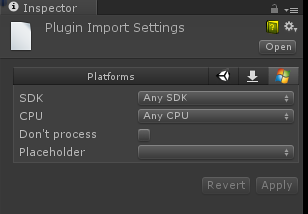

You cannot use Windows Store Apps specific plugins if you use Windows Store Apps API like this http://msdn.microsoft.com/en-us/library/windows/apps/br211377.aspx in Unity Editor, so we changed a bit how Unity Editor handles them. So basically you make two versions of plugins:
Both of them must share the same name and have the same assembly version. For example, you should place Editor compatible plugin in Assets\Plugins\MyPlugin.dll, and Windows Store Apps specific plugin in Assets\Plugins\WSA\MyPlugin.dll.
Go to Assets\Plugins\MyPlugin.dll, select Editor as the only compatible platform
Go to Assets\Plugins\WSA\MyPlugin.dll, select Windows Store Apps as the only compatible platform, now go to Windows Store Apps plugin settings
Pick ‘Assets\Plugins\MyPlugin.dll’ in the placeholder field, this means that when building to Windows Store apps ‘Assets\Plugins\MyPlugin.dll’ will be used when compiling your scripts, but ‘Assets\Plugins\WSA\MyPlugin.dll’ will be copied to final folder instead of ‘Assets\Plugins\MyPlugin.dll’. This achieves two things - Unity Editor will successfully compile your scripts, but during the game you’ll be using API from Windows Store Apps specific plugin.

Don’t process option
This option is used when you don’t want for Unity to patch your assemblies, usually this option should be applied for plugins which contain heavy Windows Runtime API, and Unity fails to patch them.
| Property: | Function: |
|---|---|
| SDK | Limits plugin to Windows Store Apps built with SDK 8.0 or SDK 8.1. |
| CPU | limit plugin to 32 bit, 64 bit or ARM players. |
| Don’t process | (Only applies for managed assemblies) Disables patching for this assembly. Patching is needed when assemblies contains classes serializable by Unity. In these cases, additional IL code is injected into the assemblies. If you know that assemblies doesn’t have such classes then it’s safe to disable the patching. Note: if the assembly isn’t patched and Unity tries to serialize at runtime, you’ll get an ‘Out of bounds’ error or something similar. |
| Placeholder | (Only applies for managed assemblies). With Windows Store Apps you can have plugins compiled against .NET Core, but because the Unity Editor runs on Mono, it will fail to recognize such assemblies. As a result, C# or JS files won’t be able to reference them. To overcome this, you have to provide an assembly compiled against .NET 3.5 with identical API which would act as a placeholder for the real plugin. |
For example, let’s say you have two assemblies:
Plugins\WSA\MyPlugin.dll - assembly compiled against .NET Core with Windows Runtime API inside.
Plugins\MyPlugin.dll - assembly compiled against .NET 3.5 which has identical public API with dummy function implementations.
Click on Plugins\WSA\MyPlugin.dll, select Placeholder and pick Plugins\MyPlugin.dll.
This way when Unity compile scripts it will reference Plugins\MyPlugin.dll file, but when Unity will copy plugins to final directory, it will copy Plugins\WSA\MyPlugin.dll instead of Plugins\MyPlugin.dll.
Unity injects serialization code into your assemblies, meaning if you have a class derived from MonoBehaviour in your plugin, and Unity doesn’t patch it, you might get a serialization error during runtime.
Both of them must share the same name. For example, you should place an Editor compatible plugin at Assets\Plugins\MyPlugin.dll, and a Windows Store Apps specific plugin at Assets\Plugins\WSA\MyPlugin.dll. When you’re working in Editor the Assets\Plugins\MyPlugin.dll will be used, and when you’re building to a Windows Store Apps app the Assets\Plugins\WSA\MyPlugin.dll will copied over to the build.